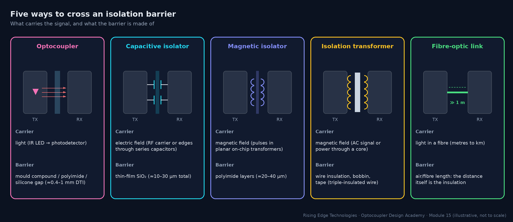
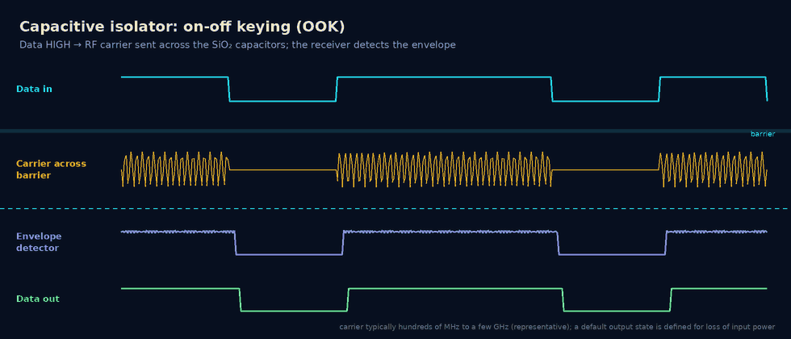
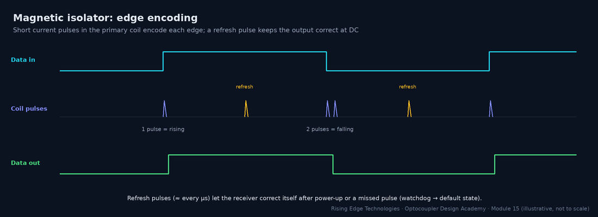
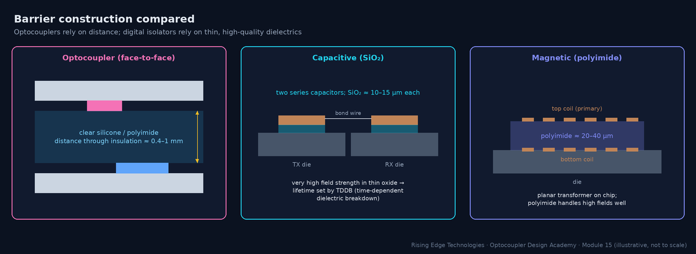
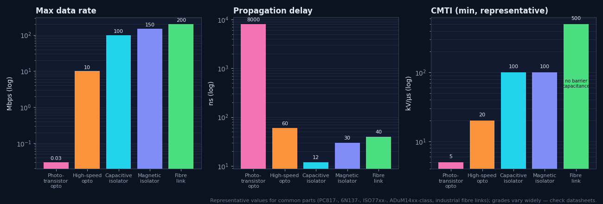
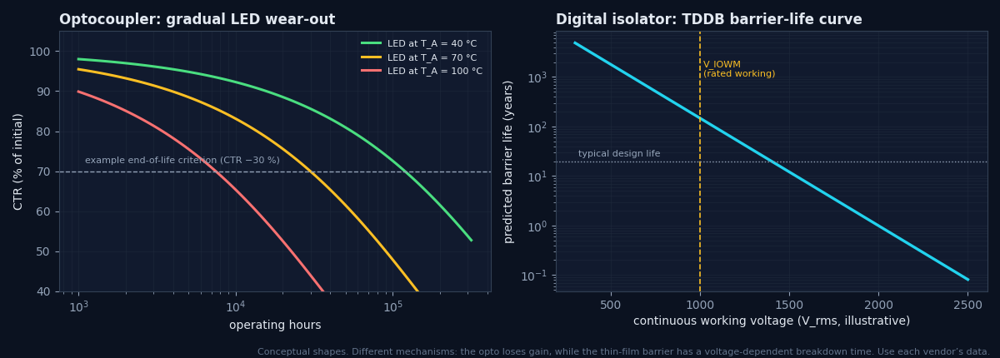
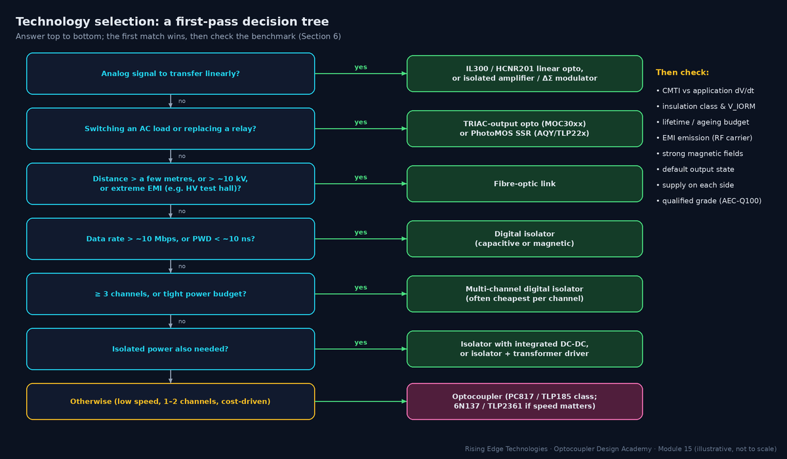

Optocouplers vs Modern Isolation Technologies
A quantitative face-off: capacitive and magnetic digital isolators, isolation transformers, and fiber optics versus the optocoupler — benchmarked on speed, power, isolation quality, EMI, reliability, aging, and cost, ending with a technology selection decision tree.
Illustrations and animations are original teaching drawings, not to scale. Values marked representative are typical of common parts; always confirm against the current datasheet or standard you design to.
Every isolator does the same job: move information (and sometimes power) across an insulation barrier that blocks DC and low-frequency current. They differ in what carries the signal (light, electric field, magnetic field) and what the barrier is made of, and those two choices drive almost every performance difference.

| Technology | Typical parts (examples) | Sweet spot |
|---|---|---|
| Phototransistor optocoupler | PC817, TLP185, 4N35 | Low-speed logic, PLC inputs, SMPS feedback, lowest cost |
| High-speed / gate-drive optocoupler | 6N137, TLP2361, ACPL-064L, HCPL-3120, ACPL-332J | 1–25 Mbps logic, IGBT gate drive |
| Capacitive digital isolator | TI ISO77xx family, Silicon Labs (Skyworks) Si86xx family | SPI/UART/CAN/I2C, many channels, high CMTI |
| Magnetic digital isolator | Analog Devices iCoupler ADuM14xx/ADuM12xx; isoPower ADuM5xxx | Many channels, integrated isolated power |
| Isolation transformer | Ethernet magnetics, gate-drive transformers, flyback transformers | AC signals, power transfer |
| Fibre-optic link | Industrial plastic-fibre or glass-fibre transceivers | Very high voltage, long distance, extreme EMI |
Part families are examples of widely used devices; vendors and part numbers change, so confirm current availability and ratings.
A capacitive isolator puts two silicon dies in one package. The transmitter drives a signal across a pair of series capacitors built from thick SiO2 layers on the die; the receiver detects it. A capacitor blocks DC, so the data must be encoded as an AC signal.
On-off keying (OOK)
Used by e.g. TI ISO77xx: one logic state sends a high-frequency carrier, the other sends nothing. The receiver rectifies the envelope. DC-correct by design: a steady HIGH is a steady carrier.
Edge / differential encoding
Other designs send edge information differentially and use refresh or state-keeping logic to hold DC levels.
SiO2 barrier
Very high dielectric strength (hundreds of V/µm), so a thin layer withstands kV. Its wear-out mechanism is TDDB, which vendors model to predict barrier life at the working voltage (Section 8).
Default output
With the input side unpowered, the output goes to a defined default (HIGH or LOW, selected by part suffix). Choose the safe state for your system.

Worked example — replacing four 6N137s on an SPI bus
An isolated ADC uses SPI at 8 MHz: SCLK, MOSI and CS forward, MISO back.
- 6N137 max 10 Mbps with tPHL/tPLH up to about 75 ns: round-trip SCLK→MISO delay ≈ 2 × 75 = 150 ns, more than one 125 ns clock period. SPI timing fails unless you slow the clock.
- A 3-forward/1-reverse capacitive isolator (ISO7741-class): delay about 10–16 ns per direction, so the round trip is about 30 ns. That fits easily.
- Supply: 4 × 6N137 ≈ 4 × (10 mA ICC + 5 mA average LED) = 60 mA; the quad isolator needs a few mA in total.
Magnetic isolators (Analog Devices’ iCoupler is the best-known family) use micro-transformers: planar coils on the die separated by a thick polyimide layer. Because a transformer only passes changes, the input is edge-encoded into short current pulses.


Power efficiency
Energy is spent only on edges (plus refresh), so current scales with data rate: very low at low rates.
isoPower
The same micro-transformer technology transfers power (tens to hundreds of mW) with an on-chip oscillator, removing the external DC-DC. The price is efficiency (often well below 50 %) and radiated emissions that need careful layout (stitching capacitance across the barrier).
Magnetic field immunity
The tiny coils are very small loops, so external fields induce little voltage. Datasheets quote immunity in A/m or tesla; check it near welders, large motors or induction heaters.
Missed-pulse recovery
Refresh pulses (about every microsecond) and a watchdog restore the correct state or force the default after loss of input power.
Discrete transformers are the oldest isolation technology and still the only one that moves significant power. As signal isolators they pass AC only, so DC levels need encoding (Manchester, pulse trains) or a DC-free protocol (Ethernet).
Signal transformers
Ethernet magnetics isolate every wired Ethernet port: typically 1.5 kVrms functional isolation (IEEE 802.3). Gate-drive transformers pass PWM pulses to high-side switches without a separate supply.
Power transformers
Flyback and forward transformers provide both power and safety insulation, using triple-insulated wire, tape layers and bobbin creepage. In an SMPS, the optocoupler in the feedback loop and the transformer share the same barrier.
Weaknesses
Size, interwinding capacitance (tens of pF: poor CMTI unless shielded), no DC, magnetic-field sensitivity and custom design effort.
- ICM: common-mode displacement current through the barrier (A)
- CIO: barrier capacitance (F): ≈ 0.5–1 pF for an opto or digital isolator, 5–50 pF for a transformer
- dV/dt: common-mode slew rate (V/s)
Worked example — why transformers struggle with CMTI
- At 50 kV/µs, a 1 pF barrier passes 1 pF × 50 × 109 V/s = 50 mA for the duration of the edge.
- A 20 pF signal transformer passes 1 A, which is enough to disturb nearly any receiver unless the winding is shielded and the return path is designed.
A fibre-optic link is an optocoupler stretched out: an LED or laser, a length of fibre and a photodiode receiver. Because the insulation is the fibre length itself, the isolation voltage is limited only by the fibre surface and routing, and the barrier capacitance is effectively zero.
Where it wins
HV converters (MV drives, HVDC, traction), test halls, pulsed-power systems, and long links between separately earthed buildings.
Media
Plastic optical fibre (POF) for short industrial links (tens of metres, tens of Mbps); glass fibre for long distances and Gbps.
Costs
Transceivers, connectors, a transmitter LED current of tens of mA, and handling (bend radius, dirt on connectors).
Ageing
The transmitter LED ages like an opto LED: the link budget must include end-of-life optical power margin, the same idea as the CTR budget in Module 9.
The table below uses representative values for common parts in each class. Individual grades vary by an order of magnitude, so use it to choose a class, then design with the actual datasheet.
| Metric | Phototransistor opto | High-speed opto | Capacitive isolator | Magnetic isolator | Fibre link |
|---|---|---|---|---|---|
| Max data rate | ~10–50 kbps | 1–25 Mbps | 100–150 Mbps | 25–150 Mbps | 10 Mbps – Gbps |
| Propagation delay | 3–20 µs | 20–100 ns | 7–20 ns | 20–60 ns | 20–100 ns |
| PWD | µs (load-dependent) | 5–35 ns | < 5 ns | < 5 ns | ns |
| Supply per channel | 5–10 mA (LED + pull-up) | 10–20 mA | ~1–3 mA | ~0.5–3 mA (rate-dependent) | 10–50 mA |
| CMTI (min) | 1–15 kV/µs | 10–50 kV/µs | 50–150 kV/µs | 25–150 kV/µs | very high |
| Isolation rating | to ~5 kVrms | to ~5 kVrms | to ~5.7 kVrms | to ~5 kVrms | limited by distance |
| Wear-out | LED → CTR drift | LED → threshold drift | TDDB of SiO2 | polyimide ageing | TX LED output |
| Temperature | −30/−55 … +100/+125 °C | −40 … +85/+105 °C | −40 … +125 °C | −40 … +125 °C | −40 … +85 °C |
| Relative cost | lowest | low–medium | medium, low per channel | medium, low per channel | high |

Optocoupler power is dominated by the LED, and it is spent whether you send 1 bit/s or 10 kbit/s. Digital isolator power is mostly quiescent plus a term proportional to data rate. The crossover depends strongly on channel count.
- N: channels; VDD: supply (V); D: duty cycle of LED-on state
- IF: LED current; ICC: detector supply current (high-speed optos); IPU: average pull-up current (A)
- IQ: quiescent current per channel (both sides); k: dynamic current per Mbps (A/Mbps); fdata: data rate (Mbps)
Both technologies can be certified to reinforced insulation, but they wear out differently, and the certification standards differ: IEC 60747-5-5 for optocouplers, IEC 60747-17 for capacitive and magnetic couplers (Module 16).

Opto: function ages, insulation robust
The thick polymer barrier has large margin; the LED ages. A degraded opto usually fails safe (the signal stops) rather than unsafe (the insulation breaks down).
Digital isolator: function stable, insulation modelled
No LED to age, so timing and thresholds barely drift. The thin barrier has a voltage-dependent lifetime, and vendors publish TDDB curves showing the working voltage for 20–40+ years with margin.
Surge capability
Both are tested with a surge (VIOSM, 1.2/50 µs). Check the value for your overvoltage category and whether it applies to basic or reinforced insulation.
Distance through insulation
Some end-product standards require a minimum DTI (e.g. 0.4 mm) for reinforced solid insulation, unless the component standard route is used. Thin-film isolators rely on the component certification (Module 16).
EMI cuts both ways: what the isolator emits, and what disturbs it.
| Aspect | Optocoupler | Capacitive | Magnetic | Design response |
|---|---|---|---|---|
| Radiated emission | Negligible (no RF carrier) | Carrier harmonics can radiate via the barrier | Low for data; high for isoPower DC-DC | Stitching capacitance across the barrier (PCB-embedded), short return paths, vendor layout guides |
| Common-mode transients | Weakest (low CMTI), especially phototransistors | Strong | Strong | Choose CMTI ≥ 2× application dV/dt |
| Magnetic fields | Immune | Immune | Highly immune; check rating | Keep away from high-current loops anyway |
| RF immunity (conducted/radiated) | Good; slow parts filter naturally | Good; check datasheet EMC results | Good | Filter inputs; test per IEC 61000-4-3/-4-6 (Module 13) |
| ESD on I/O | Depends on the circuit, not the barrier | Same | Same | TVS on the cable side |
Digital isolators have taken most high-speed digital sockets, but optocouplers remain the best answer in several places. Knowing them lets you defend an opto choice instead of apologising for it.
Simplicity and cost at low speed
A PC817 and two resistors: no second supply, no decoupling, cents in cost, dozens of second sources.
No active supply on one side
The output side needs only a pull-up, and photovoltaic/PhotoMOS outputs need no supply at all. Ideal for PLC inputs and contact outputs.
Linear / analog
IL300 and HCNR201 servo-linearised couplers give simple, low-cost analog isolation (Module 5).
SSR and TRIAC functions
MOC3041-class zero-cross TRIAC drivers and AQY210/TLP222 PhotoMOS relays have no drop-in digital-isolator equivalent.
SMPS feedback
TL431 + PC817 is the lowest-cost, well-understood loop (Module 10); isolated error amplifiers exist but cost more.
Fail-safe behaviour
An aged LED fades toward “off”; many safety interlocks exploit this with a dynamic (pulsed) signal.
Robust thick barrier
Large DTI and a long track record in field-proven designs simplify some certification arguments.
Wide input tolerance
AC-input (H11AA1) and wide-range inputs with a series resistor accept 5–240 V signals directly.
Use a structured method so the same inputs always lead to the same answer, and so reviewers can check your reasoning. Start with function (analog, switching, digital), then speed, channel count, supplies and environment.

In a design review, “we always use PC817s” and “digital isolators are modern” are both weak arguments. A defensible choice states the requirements, the alternatives considered, and the numbers that decided it.
Template — isolation technology justification
- Requirement: signal type, data rate/bandwidth, channels and directions, insulation class and working voltage, CMTI (application dV/dt × 2), temperature range, lifetime, supplies available on each side, cost target.
- Alternatives: at least two technologies, with representative parts.
- Comparison: the three to five metrics that matter here, with numbers (speed and delay, power, CMTI, lifetime, cost per channel, BOM impact).
- Decision and risks: the choice, its weak points and how they are mitigated (e.g. “opto: CTR ageing covered by kage = 0.5 in the margin calculation”).
- Evidence: certificates (UL 1577, IEC 60747-5-5 or -17), test results (Module 13), second sources.
Worked example — 24 V PLC digital input card, 16 channels
- Requirements: 16 inputs, 1 kHz max, 24 V field side with no logic supply, basic insulation 50 V to logic (functional in practice, but specified as basic), −25 to +70 °C, lowest cost.
- Option A: 4 × quad-channel PC817-type (PC847 class) couplers, field side supplied by the input signal itself, about 3–5 mA per input at the threshold; no field-side supply.
- Option B: 2 × 8-channel digital isolators + a field-side DC-DC (or loop-derived supply) + input comparators.
- Decision: A, because speed and CMTI needs are trivial, there is no field-side supply and the cost is lowest. Risk: CTR ageing, covered by an end-of-life design at 15 V threshold (Module 10, example 2).
Carrier and barrier
Light/field/magnetism and polymer/SiO2/polyimide explain most differences.
Speed
Digital isolators win above ~1–10 Mbps with ns-level delay and PWD.
Power
Opto power is LED-dominated and rate-independent; isolator power scales with rate and channels.
CMTI
Low barrier capacitance and differential receivers give digital isolators 50–150 kV/µs; fibre is effectively immune.
Lifetime
Opto function ages (LED); thin-film barriers have TDDB-modelled insulation life.
EMI
Optos emit nothing; OOK carriers and isoPower need layout care.
Opto strongholds
Low speed and cost, no receive-side supply, linear, TRIAC/SSR, SMPS feedback.
Method
Function → speed → channels → supplies → environment, then verify with numbers.
Design checklist
Tick items as you review a design. Your ticks are saved in this browser only; use your browser’s print function for a sign-off copy.
Four parts: multiple choice, true/false, a matching exercise and engineering scenarios. Score 80 % on the multiple choice to pass the module.